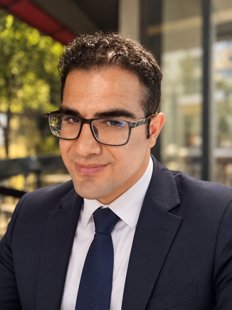

MATHEMATICS. DATA. A LITTLE ADVENTURE.
Hey, I’m Okan Kaya.
Charting a course
through data.
A mathematician’s curiosity. A builder’s mindset.
I turn complex questions into models, code, and clear insights.

OK / PERSONAL LOGBOOK01THE PERSON BEHIND THE PROJECTS
Curiosity is
my compass.
I’m a mathematics graduate and an MSc Industrial Mathematics student at TU Dortmund University. I’m interested in the point where rigorous thinking meets useful, real-world tools.
My path connects statistics, computational modeling, and data analysis with a growing interest in machine learning and bioinformatics. Outside the screen, you’ll find me hiking, reading science, or training in kickboxing.
02ISLANDS I’VE EXPLORED
A few things
I’ve built.
Real datasets. Reproducible work.
The questions, the code, and what I learned along the way.
FROM MY ACADEMIC LOGBOOK
Where the curiosity started.
Fractals with Python 2024
Senior project exploring fractal geometry, Hausdorff dimension, and self-similarity through Python visualization.
Flood Risk, Fractals & AI 2024
TÜBİTAK 2209-A project combining fractal geometry and AI with computational models for geographic data analysis.
03WHAT’S IN MY BACKPACK
The tools.
The thinking.
Tools change. Asking the right question is the skill I keep building.
Code & computation
Analysis & reporting
Mathematical foundations
04THE JOURNEY SO FAR
Every chapter
adds something.
Learning
- 2026 — PRESENT
MSc Industrial Mathematics
TU Dortmund UniversityDeep learning, optimization, simulation, numerical linear algebra, and numerical methods for PDEs.
- 2025 —
MSc Biotechnology
Yeditepe UniversityPreparatory coursework in molecular biology, genetics, and bioinformatics. On academic leave since October 2026; degree not completed.
- 2020 — 2025
BSc Mathematics
Yeditepe University · GPA 3.34A foundation in probability, statistics, computational methods, Python, and SQL.
Doing
- 2026
Assistant Specialist
Yeditepe University · International OfficeAnalyzed incoming student data, tracked applications by country, and prepared reports using Excel and Salesforce.
- DURING UNIVERSITY & RECENTLY
Mathematics Tutor
Teaching calculus, differential equations, and analytic geometry to university and high-school students.
- 2023
Earthquake Relief Volunteer
HatayAssisted with the organization and distribution of aid packages.